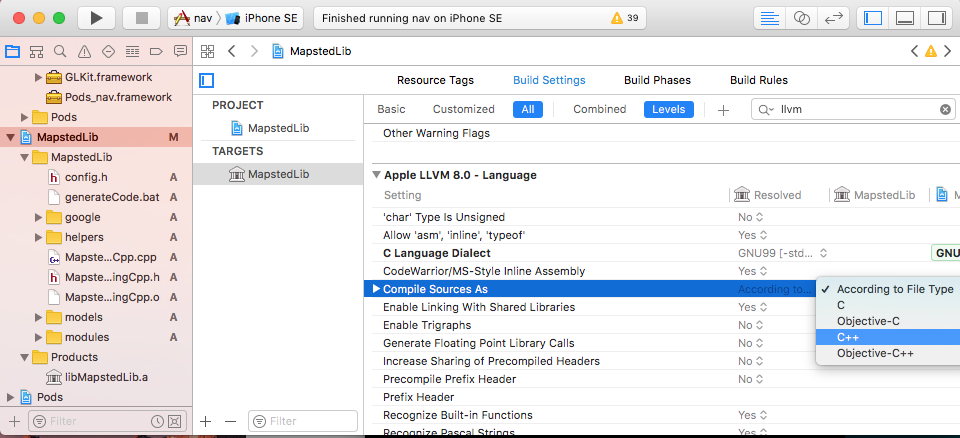
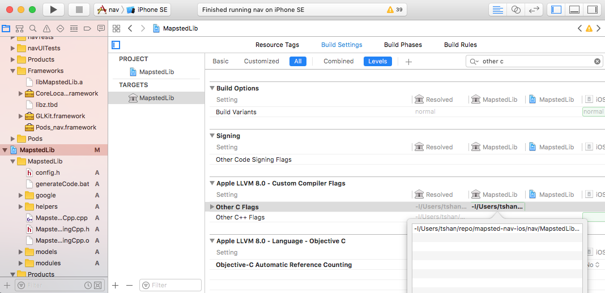
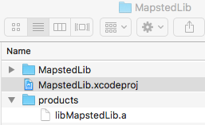
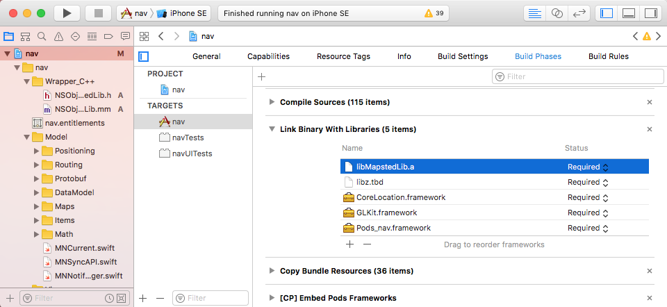
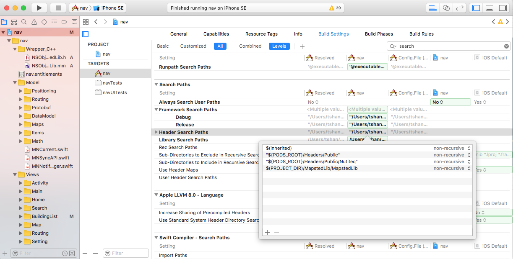
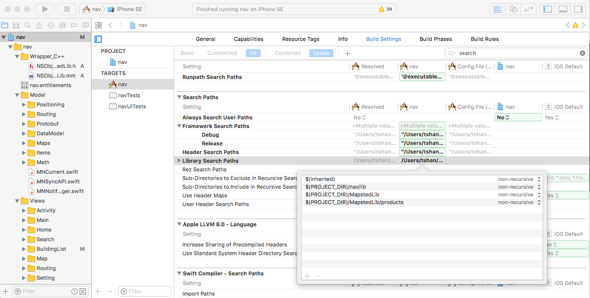
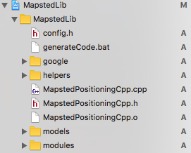

Create C++ Static Library and Use in Swift
Here is an overview on what I did. Right now at the very beginning, we have the c++ source code file and the iOS Xcode project file. We need to create a new Xcode project and put in c++ source code and compile it and create .a static library. Then put the new project and my iOS Xcode Project in the same workspace. Import the library path and the header path. At this point, the c++ static library is now successfully imported into our existing swift project. The rest we need to do is to call the c++ library inside our swift file.
Overview
Here is an overview on what I did. Right now at the very beginning, we have the c++ source code file and the iOS Xcode project file. We need to create a new Xcode project and put in c++ source code and compile it and create .a static library. Then put the new project and my iOS Xcode Project in the same workspace. Import the library path and the header path. At this point, the c++ static library is now successfully imported into our existing swift project. The rest we need to do is to call the c++ library inside our swift file.
In order to do this, we need to create an Objective-C++ class with extension .h .mm. Inside that class, we can import the header file of our c++ static library. DO NOT directly import the header file inside the bridge header. The bridge header is Objective-C header. Objective-C can import c files but not c++. Inside the object you created in Objective-C++ write all the APIs you want to use. Inside the bridge header file, import that Objective-C++ header file. Now the Objective-C++ class has exposed to swift. We can now use it inside swift classes.
Create Library Project
The first step is to compile c++ source code into .a library. Create a new project in Xcode first. When creating the project, choose Cocoa Touch Static Library. When choosing the location, go to the workspace for the existing iOS project. At bottom, there is option to Add to:, choose the workspace name and press enter. Open the existing iOS project workspace and you will see the newly created project there.
Import Source and Compile Library
Now we need to import the c++ source code into the newly created project and compile .a static library.
Choose the project folder and open in finder, copy all the c++ source code over. In Xcode File -> Add Files to ..., add everything into the project. Build and run. If everything works fine, it will compile success and create the .a library under the project folder in project navigator.
For Mapsted library, we need to set up a little bit more.
Compile as C++
Sometimes, when I compile the code, it gives me error like #include <string> not found. This may be cause it compiles c++ code as c code. In order to fix that please do the following.

On the left (project navigation panel) choose the library project, go to build settings and search for Compile Sources As. Then choose c++.
Absolute Include Path
We use absolute include path inside our c++ library, so we need to setup the compiler flag, otherwise we will have compiler error saying that include file does not exists.
By absolute include path I mean #include <abc/def.h> instead of #include "def.h". For details, see here.
In order to compile, we need to add -I<path> flag to compiler. Here is how to do it.

On the left (project navigation panel) choose the library project, go to build settings and search for other c flags. Then add -I and follow the full path where the source code home directly is. No space in between.
Compiling Protobuf Code
First, we use protobuf, but we didn't use all the protobuf source. When compiling the protobuf source code, we might have files not compilable. They mainly file names contain unitest or test and many other files that import .h files that does not exists. For those files, simply delete in project navigator and choose move to trash.
Import Library into the existing iOS project
Now if you see the left side (project navigation panel), there is a Products folder and under it you can see the generated .a file. Now right click the library file and open in finder. You can see the location for the .a file is under the Xcode DerivedData path. Copy it out into the library folder itself. You can create a products folder like what I did.

Now, lets go to the existing iOS project and select it in the project navigator (left panel in Xcode).

Drag and drop the library file under build Build Phases -> Link Binary With Libraries


Config correct header search path and library search path. For header search path, enter the path to the source code folder (Theoretically, only header files are needed. So you can point to a folder that contains all the header file of the library). For library search path, enter the path to the folder that contains the library you compiled.
At this point, the library should be imported successfully, try to compile the run the iOS project and everything should be good.
Now you can import the header file directly inside the project. For example:

1 | #include "MapstedPositioningCpp.h" |
Create In-Middle Objective-C++ File
In order to use the c++ library in swift, we need to create the in middle Objective-C++ class. Remember do NOT import the header file directly in bridge header file. Why?
The bridge header file is Objective-C. So it will see the file you import as c files instead of c++.
This is what you can do to create the in middle Objective-C++ class. First create a new Objective-C file. Now we have .h .m files in project navigator. Rename .m into .mm so now it becomes a Objective-C++ file.
Remember don't use any c++ codes in the header file and only include c++ .h files inside implementation file
For Header:
1 | // |
For Implementation:
1 | // |
Above the is class I created to test the library. NOTE, you can see above, anything related to c++ is written in c++ code. This is necessary.
For example, I init the MapstedCpp::MapstedPositioningCpp object using c++ syntax. If I use [[MapstedCpp::MapstedPositioningCpp alloc] init] then I will get the error message such as Bad receiver type... etc.
Summarize
The header file that import in Swift Objective-C Bridge File cannot contain anything c++. Hide all the c++ objects or codes within the implementation.
This also includes anything that include with in the header file. They should all be pure Objective-C or C objects.
Reference
Here are some references about c++ and Objective-C++
Mixing Objective-C, C++ and Objective-C++
Use in Swift
Now we can bridge the Objective-C++ class just like what we do to Objective-C class. Create bridge header file (or use the existing bridge header file). Import the class we wrote.
1 | #import "NSObject+MNMapstedLib.h" |
Now, you can use the Objective-C++ class inside Swift.
Bridge Implementation
When I was implementing the bridge using Objective-C / Objective-C++ I encountered following problems. Because it is my first time interacting with a c++ library in Swift, I want to find most clear and efficient way for writing the bridge. Below are all the problems I have and how I solve those problems myself. They may not be the best solution out there. Please let me know if I did anything wrong or anything can be improve to be better.
Obtain Objects Declared in C++
When I need to get data from the library, the problem I have is the representation of the data. In C++ the data is represented in a class and with in that class, it contains other class as properties.
1 | // This is only a pseudo-concept for what I described above |
So let's assume the above example, when I request for the data from the library, the library will give me something like class A. However that A is a c++ object, it is impossible for me to directly interact with A in swift. That is where the bridge kicks in.
The Objective-C and Objective-C++ codes interacts in the middle as a bridge. So what I need to do at this point is to expose the result A to the bridge and then provide another pure Objective-C objects to Swift.
Recall that in Objective-C I have a main bridge class which is the one that I import in the Swift Bridge Header File. It is a singleton class contains all the APIs to interact with different modules of the bridge.
What I do here is to create an object called ABridge.h and ABridge.mm. #import “xx/ABridge.h” with in the main bridge singleton class. At first, I would like to create a class that contains all the property that c++ has and convert the c++ function properties into objective c properties. However, I found that is a little bit unnecessary.
So what I do is I store a private instance for the c++ class A with in the implantation file. I write all the public getter and setters to get the value I want for A
Note here we need to be careful. In the interface .h file, we cannot have import the c++ library which means we cannot have any c++ class with in the interface. We mentioned about that here.
Here is how I do it in code:
.h File
1 | @interface ABridge : NSObject |
.mm File
1 | #import <xxxCPPLib> |
FAQ
Not Compile
If it still not compiles, check the following. When import the library into workspace, is it the groups as yellow folder, or is it blue folder as folder reference? Make sure every folder is yellow. Look at compiler source and see if it includes all your files as it decide if it compiles the whole library or not.